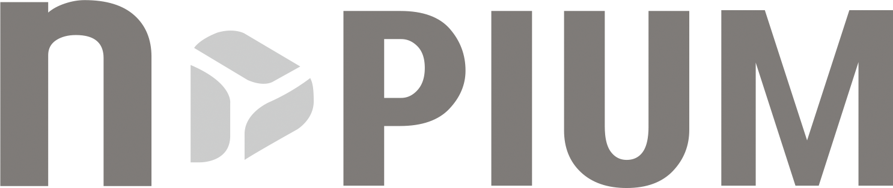

기획·진행 중 · 소개서 기준
새로운 미디어 프로젝트
방송과 디지털을 아우르는 새로운 콘텐츠를 준비합니다.

프로젝트 문의 ↗콘텐츠가 되고, 기회가 되고, 문화가 되는 연결.
새로운 가능성의 다음 장면을 만듭니다.
서로 다른 가능성이 하나의 장면이 되는 순간.
이야기를 콘텐츠로, 사람을 기회로, 지역의 문화를 세계의 경험으로. nPIUM은 서로 다른 가능성을 연결하며 새로운 가치를 만들어갑니다.
방송과 디지털 콘텐츠의 기획·제작 경험을 바탕으로 해외 인재 발굴, 글로벌 비즈니스, 페스티벌과 문화행사까지 사업의 영역을 넓혀갑니다.
세 개의 영역, 하나의 방향.
가능성을 발견하고 현실로 만듭니다.
방송에서 디지털까지.
대표 및 협업 작가의 주요 참여 경력입니다.
※ 회사소개서에 기재된 대표 및 협업 작가의 경력입니다. 각 프로그램의 nPIUM 단독 제작 실적을 의미하지 않습니다.
한국의 기획 역량과 현지의 실행력을 연결합니다.
인재 발굴부터 교육, 현지 운영과 콘텐츠까지.
새로운 콘텐츠와 문화의 가능성.
회사소개서에 담긴 프로젝트 방향입니다.
방송과 디지털을 아우르는 새로운 콘텐츠를 준비합니다.
지자체와 함께하는 음악 인재 양성 프로젝트를 구상합니다.
대구·경북의 음식문화와 현지의 이야기를 잇는 해외 페스티벌 구상.
계획과 일정은 소개서 작성 당시 기준이며, 개최 확정 또는 참가 모집 안내가 아닙니다.
프로젝트의 시작, 새로운 파트너십.
여러분의 이야기를 들려주세요.